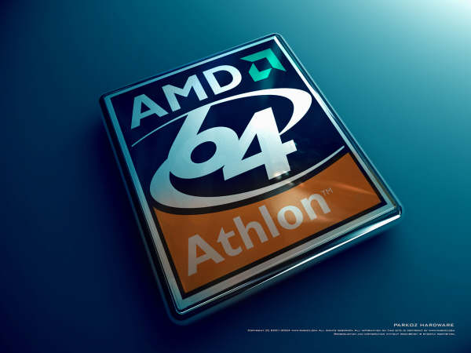

这两天还是让人讨厌的坏天气，我不是圣人做不到“不以物喜，不以己悲”。
所以这几天心情都不是很好，总觉得很压抑。
终于把CPU换成了939界面的 Althron 64bit，也安装了64位的windows XP，的确性能提升很大只是兼容性难以让我满意，因为基于windows 2003内核QQ或者TM一上线就没有响应，最让我不解的是居然连微软最新的Windows Messenger也无法使用，像我们经常使用的还有Winrar也没有无法完全兼容。还有就是很多输入法不能正常调出，尝试……努力……经过一天后我还是重返32bit了，从64位windows的测试版本到现在我一直希望可以完全过渡到64bit，但是每一个版本都让我失望，无法使用各种的硬件无法使用自己的输入法，无法连接我的SX1……等等太多的郁闷让我犹豫在32与64之间。
我算是一个比较喜欢尝试的人了，特别是IT方面的。但是还是决定暂时回归32位，因为的确事实上目前为止64的各种软硬周边还是没有完全成熟。
电脑能够实用，能够创造价值才是最重要的。
我很期待能够真正感受到64位为我们带来新鲜的体验的时候真真正正让我们感受桌面计算对我们生活的影响，对工作效率提高的促进。
